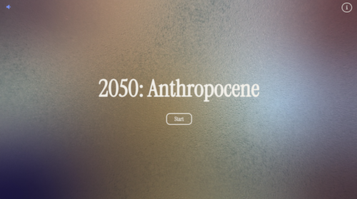
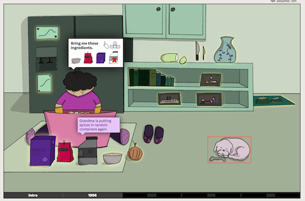
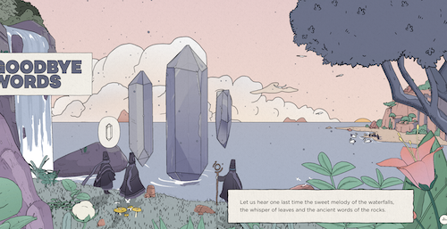
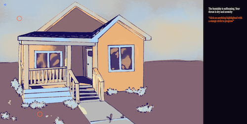
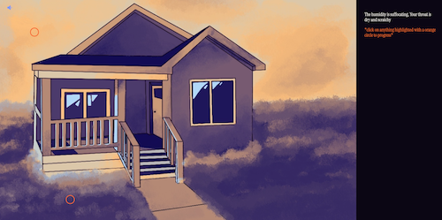
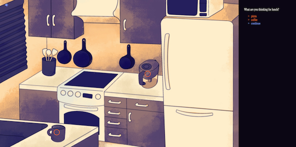
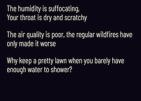
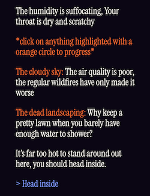

Aidan Fontano
aidanxf44@gmail.com
2050: Anthropocene is a narrative “point and click” style game that explores the impacts climate change will have on everyday life. Users make their way through four different parts of the home, seeing what has been lost and what has changed due to environmental devastation. Users are prompted to ask questions to learn more about why these changes have occurred, seeing just how much they would have to give up.
The goal of this project is to target users who are broadly aware of climate change, its causes, and its impacts, but who have not been motivated to fight for change. This audience will be around the ages of 18-30; a demographic who will likely begin to see the impacts of climate change and could become motivated to make a difference.


Climate change is a widely covered topic, many people have already seen diagrams and statistics showing how the world will change. For this project I wanted to create something more personal, a smaller scale story that showed how my target user’s life could really change. On top of researching data on climate change to inform my writing, I explored some short interactive narratives to take inspiration from. These projects tell their stories using interactive environments to enhance their storytelling.
“The search for my kimchi” is a short interactive narrative that tells the author’s story of trying to recreate their grandma’s recipe. The story is enhanced through being able to explore the environment to learn more about the author’s life at that point in time. “Nomadic Tribe” from makemepulse tells a fictional narrative about a tribe welcoming in the new year, the story is enhanced by allowing the user to interact with the environments to progress the story. Both of these projects provided important inspiration for how to tell a narrative in a subtle manner and how to enhance it through interactivity.


The environments for this project were drawn by hand with a limited color palette. The color palette of yellow, orange, blue, and purple was selected to enhance the feeling of oppressive heat. Some environments started out with a slightly more pastel color palette, but testers were the most receptive to the darker oranges and blues. After some deliberation a whimsical but readable serif font was selected; the typography needed to remain readable at small sizes while still fitting the artistic look.

Orange circles overlaid on the environments indicate interactive elements, they stand out enough to catch the users attention without distracting from the art. Similarly, the dialogue is displayed on the side of the screen so as to not cover up the environment. The text is color coded to help users follow the narrative. Dialogue from interactive objects, dialogue choices, and interactive circles are all colored with the same orange. Meanwhile continue buttons and scene progression buttons are colored with blue. User testing showed that users understood the purpose of all dialogue and buttons after color coding was implemented.


After initial user testing many revisions were made that quickly improved the experience. In earlier versions of this project the interface was only black and white, all objects could be interacted with at once, and dialogue options would not move after a response was added to the text box. After testing the interface was color coded, the “continue” button was implemented, users now interact with one object at a time, and dialogue options are moved to the bottom of the text box after each response.
With more time I would like to conduct more testing to further refine the interactions. The continue button is not a perfect solution, and ideally already selected dialogue options would stay in place and not reappear after the response. Overall user reception to the improved interface was positive with far less confusion, but there is still room for further improvements.
It was a long journey to get this project functioning in a way I was proud of. I was intimidated to start working on such an interactive project, but I learned so much about working with javascript in a short time. I’m proud that I was able to add as many interactions, animations, and art pieces as I did. Almost every step of this project had its challenges; I can count on one hand the amount of backgrounds I’ve drawn before this project and I barely knew what a javascript object was, nevermind how to utilize them for every interaction in my game. In the end I learned a lot and while I could keep improving this project for a long time, I’m excited to present this for the end of Interactive Media III.